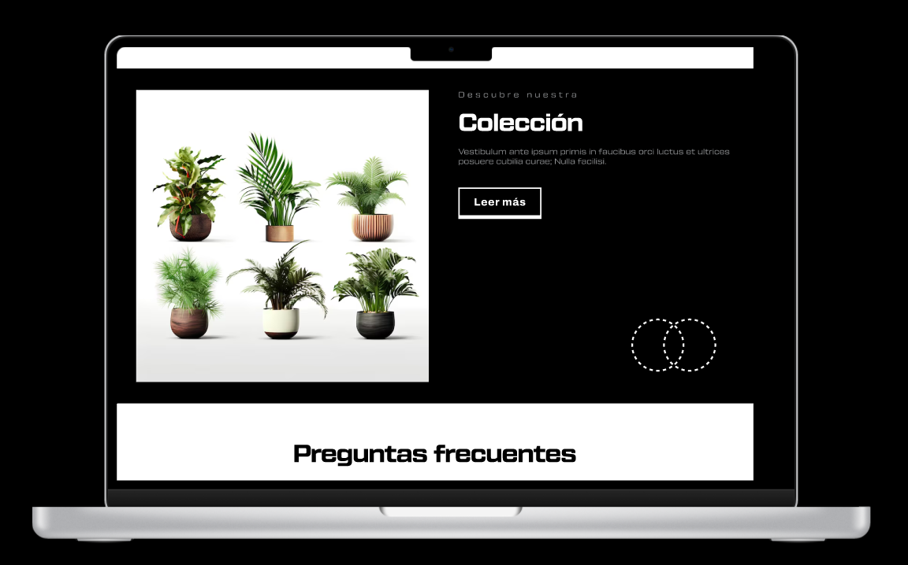
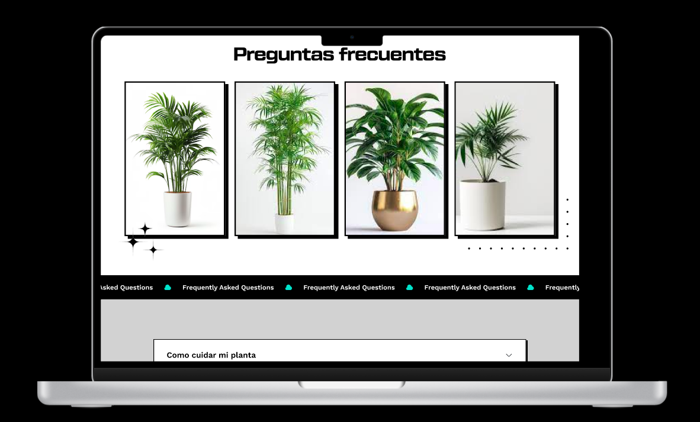
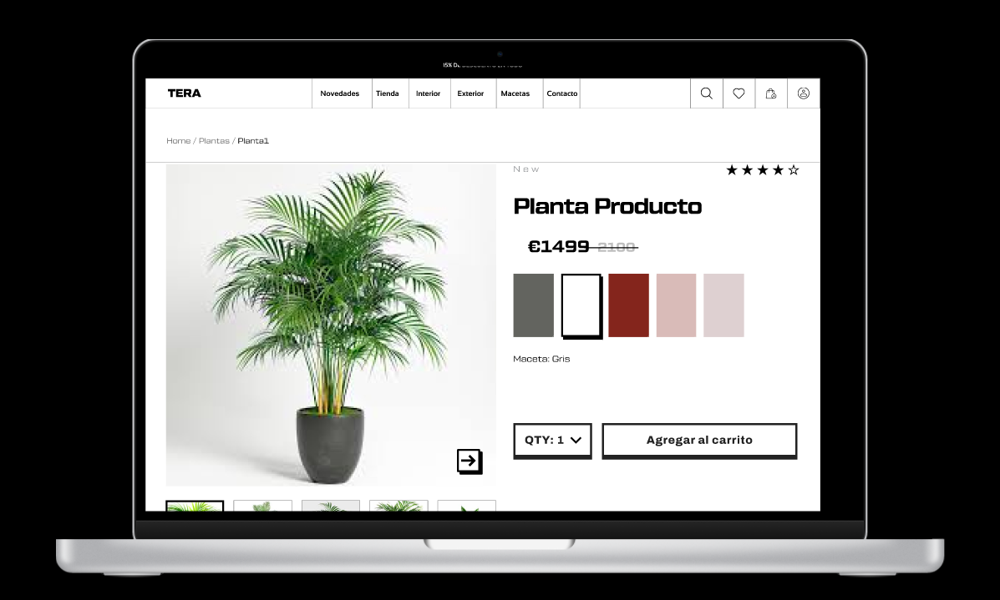
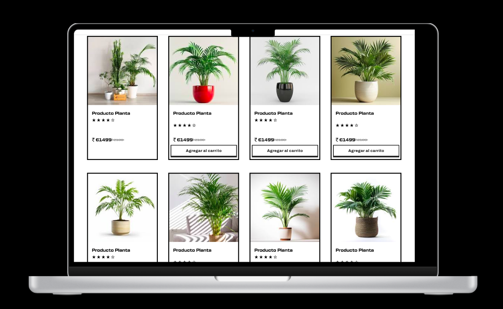
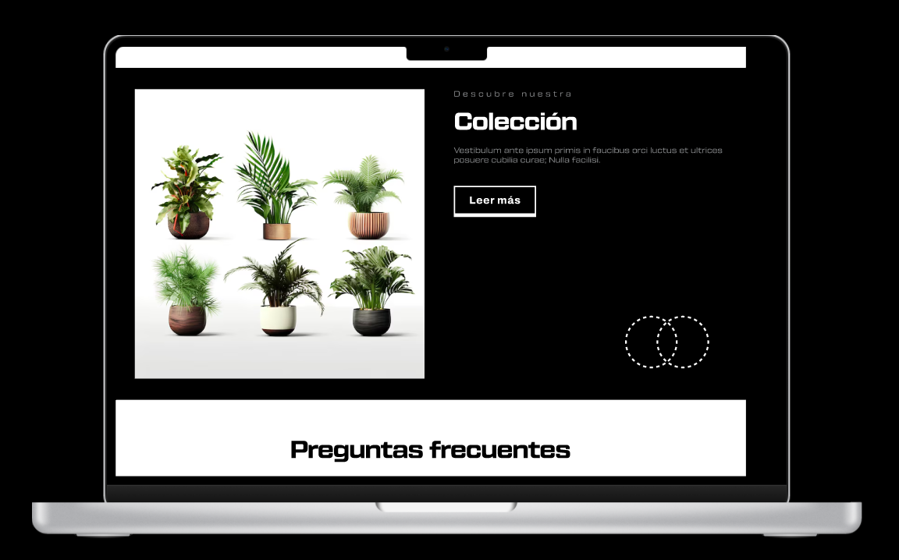
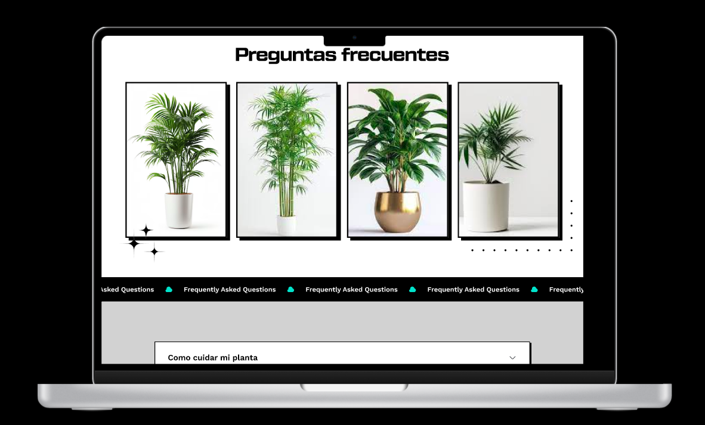
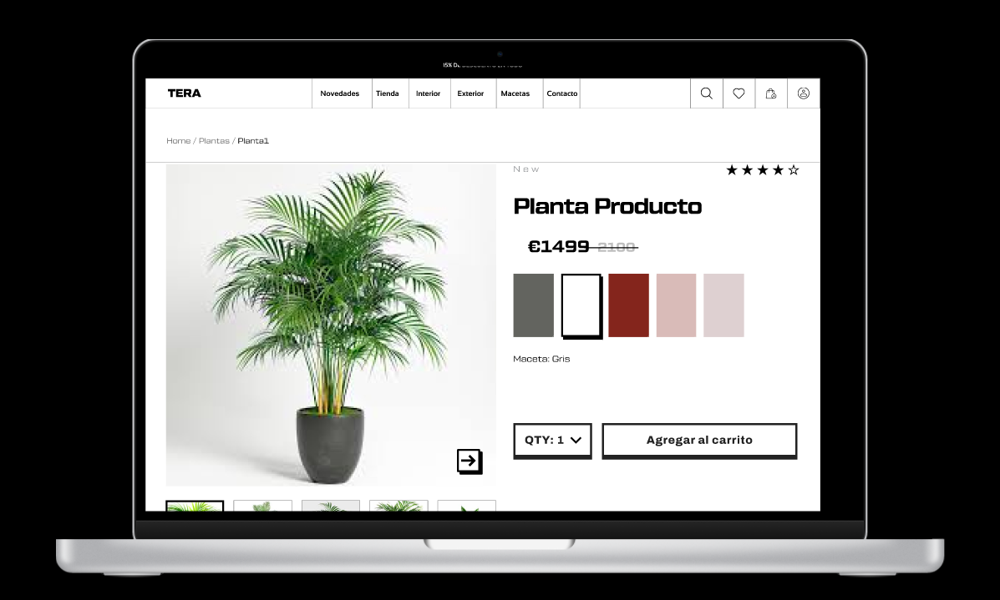
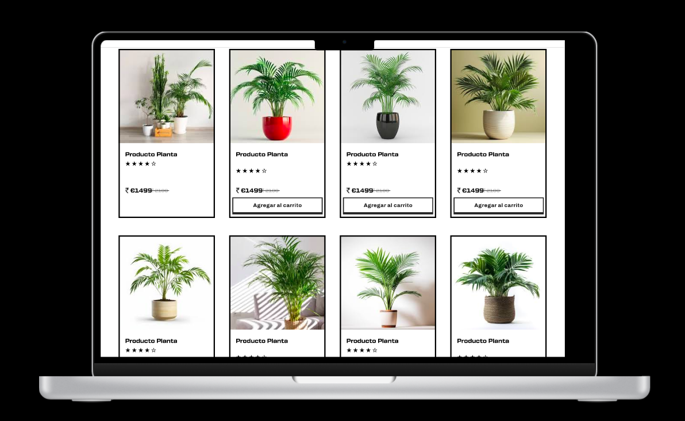

Tera
 







Problema
Problema/Reto: Rediseño de una Web de Plantas Antiguo En este proyecto, me enfrenté al desafío de rediseñar una web de plantas que había quedado desactualizada y poco atractiva para los usuarios. El sitio original tenía un diseño confuso, una estética anticuada y carecía de secciones útiles que pudieran mejorar la experiencia del usuario. Mi objetivo era modernizar la web, dándole un enfoque más dinámico y visualmente atractivo, al mismo tiempo que mantenía la esencia del contenido sobre el cuidado de las plantas.
Solución
Para abordar este reto, comencé por realizar una investigación sobre las tendencias actuales en diseño web y analicé cómo otros sitios dedicados a la jardinería presentaban su contenido. Con un enfoque en el estilo brutalista, decidí que quería romper con la uniformidad y los diseños convencionales, optando por una estética audaz que utilizara un esquema de colores en blanco, negro y verde. El primer paso fue redefinir la estructura del sitio, creando secciones que no solo fueran informativas, sino que también guiaran al usuario en su experiencia de navegación. Implementé secciones dedicadas al cuidado de las plantas, donde los usuarios pudieran encontrar consejos prácticos y recursos valiosos. Para hacer el contenido más atractivo, utilicé fotos limpias y de alta calidad, permitiendo que las imágenes de las plantas brillaran en un fondo minimalista. Uno de los mayores desafíos fue asegurarse de que la nueva estética brutalista no compromitiera la funcionalidad del sitio. Por lo tanto, prioricé la usabilidad en cada decisión de diseño. Opté por un diseño de cuadrícula asimétrica que incorporara elementos interactivos, como animaciones sutiles y transiciones suaves, para mantener la atención del usuario y hacer que la experiencia de navegación fuera más envolvente. Como resultado final, logré crear una web de plantas modernizada que no solo era visualmente impactante, sino que también ofrecía una experiencia de usuario intuitiva y dinámica. El nuevo diseño no solo atrajo a más visitantes, sino que también facilitó el acceso a la información, convirtiendo la web en un recurso valioso para los amantes de las plantas, desde principiantes hasta expertos.